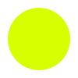

Media contact: jody@sentientproductions.com · 313.events
313.events is an independent Detroit-area event discovery and editorial platform. It covers Detroit and the surrounding region through the Detroit Orbit, the full area within range of the city rather than Detroit proper alone. 313.events is a product of Sentient Productions LLC, based in Detroit, Michigan.
The product combines automated event aggregation with original editorial curation. Most of what appears on the calendar, the map and individual event pages is aggregated from organizers, venues and public event sources, or submitted directly by organizers and the public. Including an event is not an endorsement or an editorial judgment about it.
On the Radar is the editorial component: a curated collection of local press coverage of Detroit-area events, drawn from outlets the site tracks, including Metro Times, WDET and BridgeDetroit. Choosing which coverage to surface and linking it to the right event is an editorial decision, separate from the automated aggregation elsewhere on the site.
313.events does not currently run paid placements, sponsored listings or paid editorial coverage. If that changes, paid material will be labeled near the content itself.
Always confirm dates, times and venues before making plans. © 2026 Sentient Productions LLC. 313.events is a product of Sentient Productions LLC, Detroit, Michigan.
| Name | 313.events |
| What it is | An independent Detroit-area event discovery and editorial platform |
| Coverage | Detroit and the surrounding region, called the Detroit Orbit |
| Product parts | Event calendar and map; individual event pages; venues; On the Radar (curated local press coverage of Detroit-area events) |
| How events are added | Aggregated from organizers, venues and public event sources; submitted by organizers and the public through Submit an Event |
| Corrections | Organizers and venues can request a correction to a listing |
| Publisher | Sentient Productions LLC, Detroit, Michigan |
| @313.thecityison | |
| Media contact | jody@sentientproductions.com |
Wordmarks are supplied as SVG and PNG in the media kit ZIP and on the 313.events media page. Use them as supplied: the first for dark backgrounds, the second for light ones.

Public product screenshots are added to the kit after they are captured from the live public site. They show product screens only, with no third-party flyers or licensed photography.